Скотти
Шеффлер
Первая ракетка мирового гольфа и обладатель двух зелёных жакетов Masters, собранный в восьми предметах.
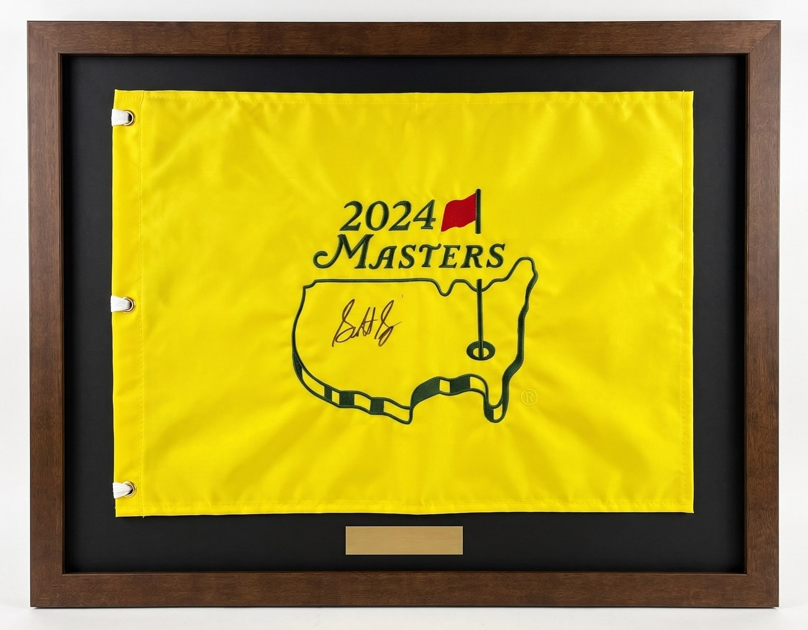
Игрок,
определяющий эпоху
Скотти Шеффлер — гольфист, определяющий свою эпоху: первый номер мирового рейтинга и двукратный чемпион Masters в зелёном жакете. Его доминирование последних сезонов сделало имя игрока одним из самых узнаваемых в спорте. Предметы, связанные с ключевыми победами такой карьеры, — редкий подарок, который со временем становится только заметнее.
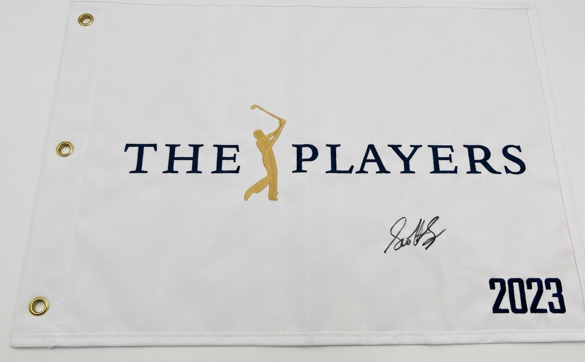
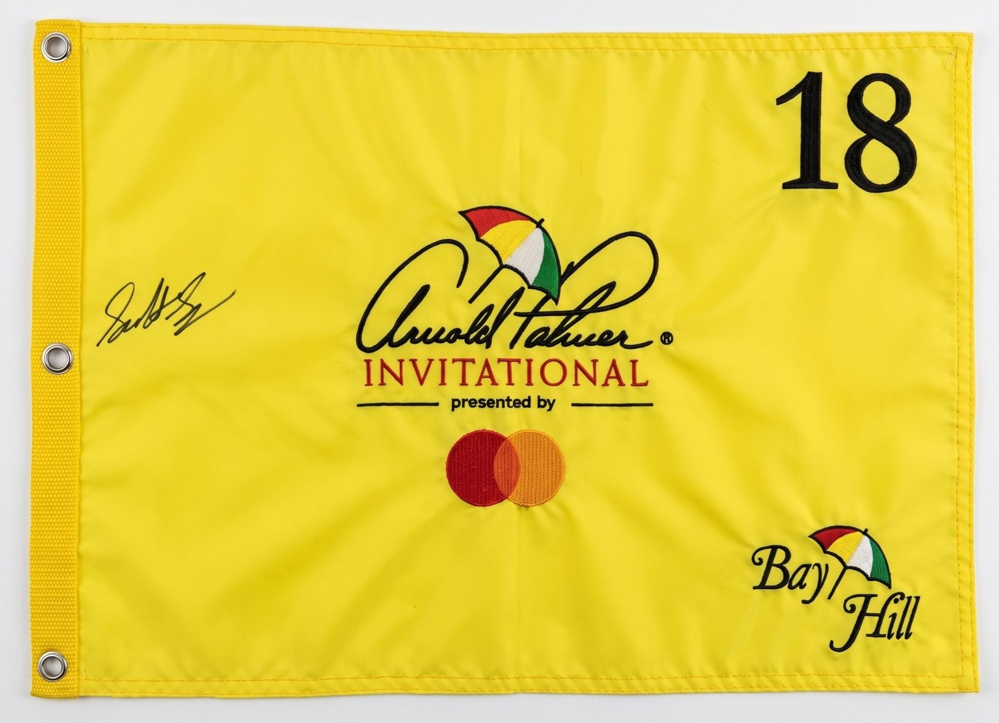
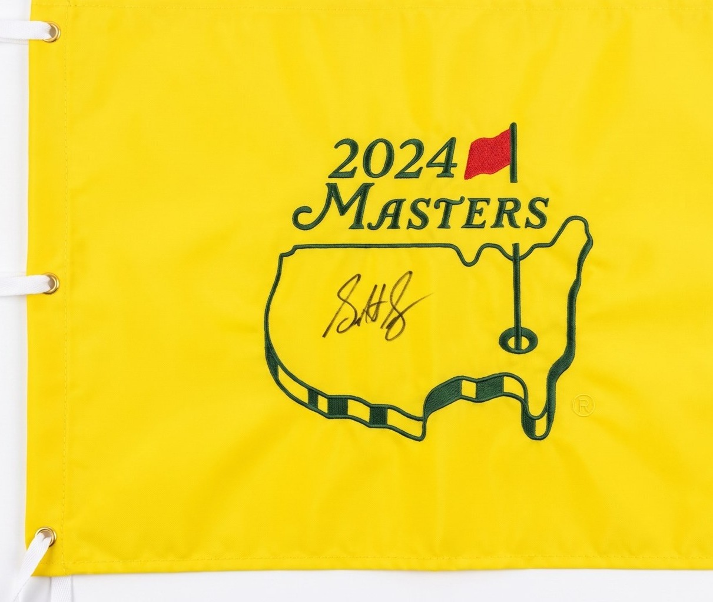
Оформление
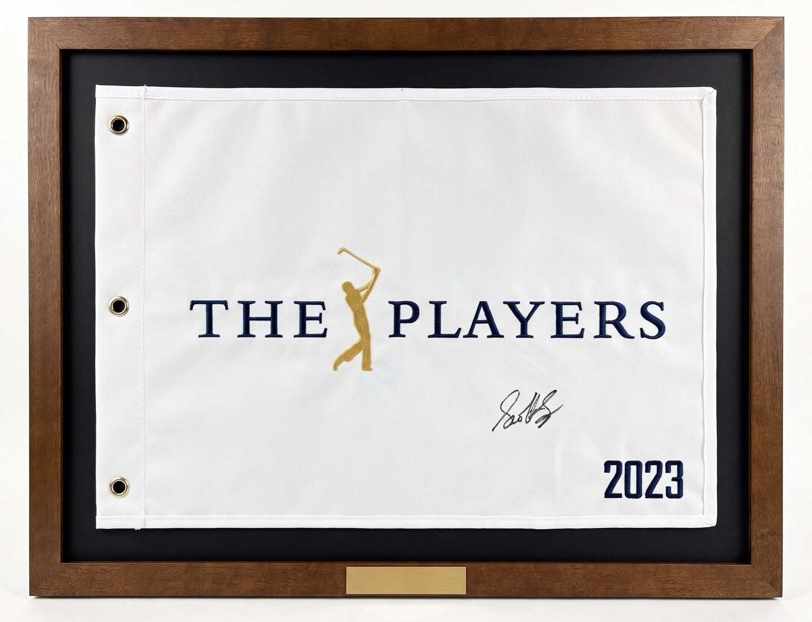
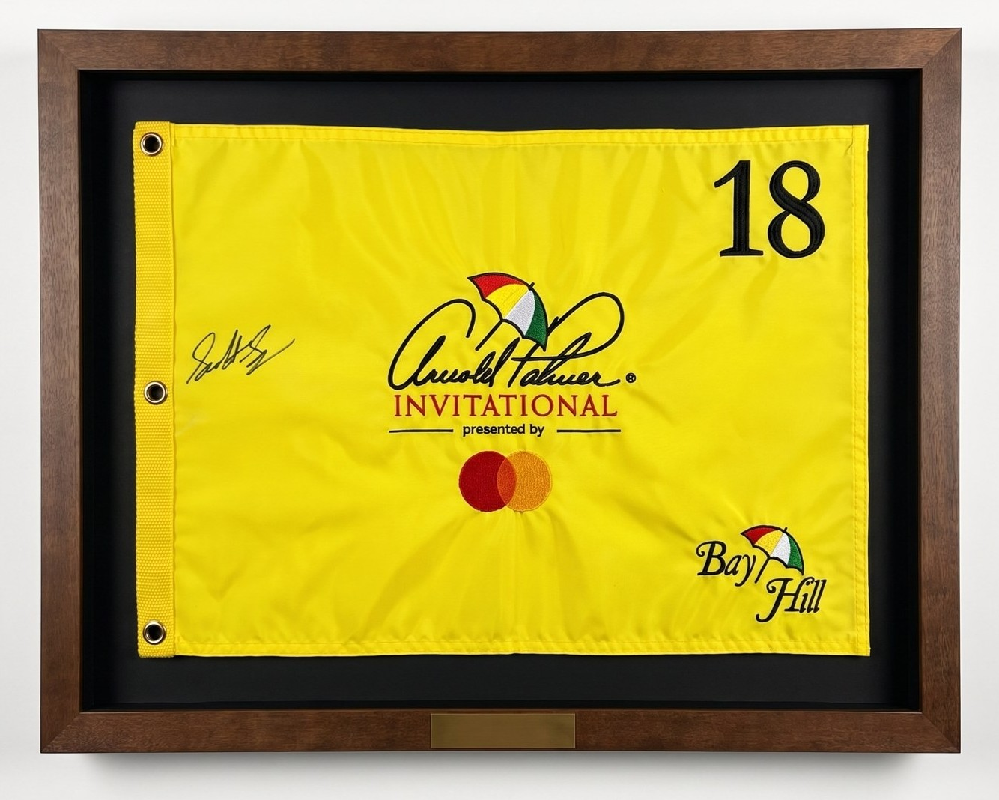
Каждый флаг монтируется в деревянную раму с паспарту и латунной табличкой. Пример оформления, готового занять место на стене кабинета или клубной комнаты сразу после вручения.
Примеры оформления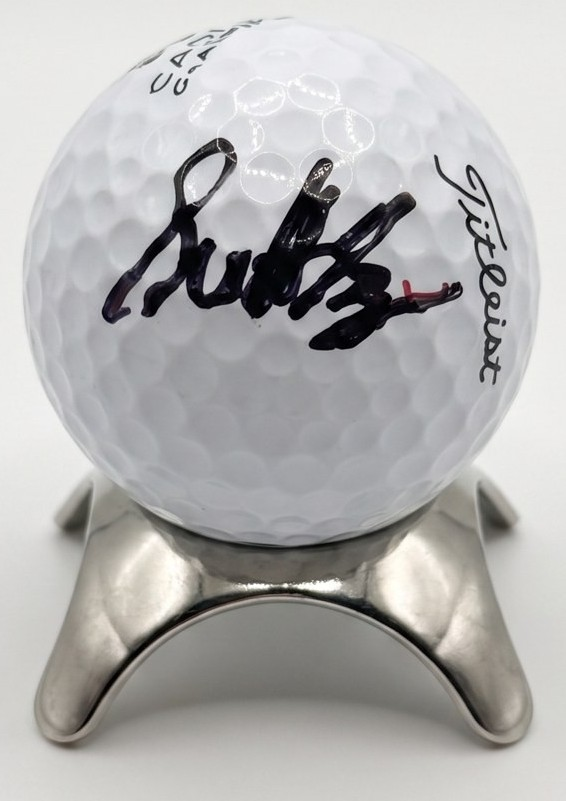
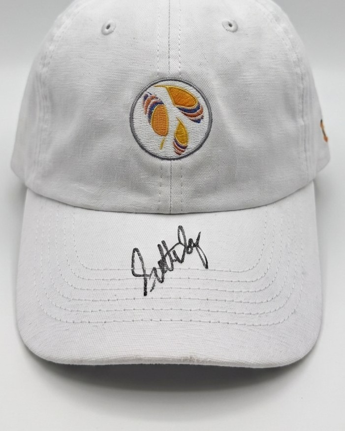
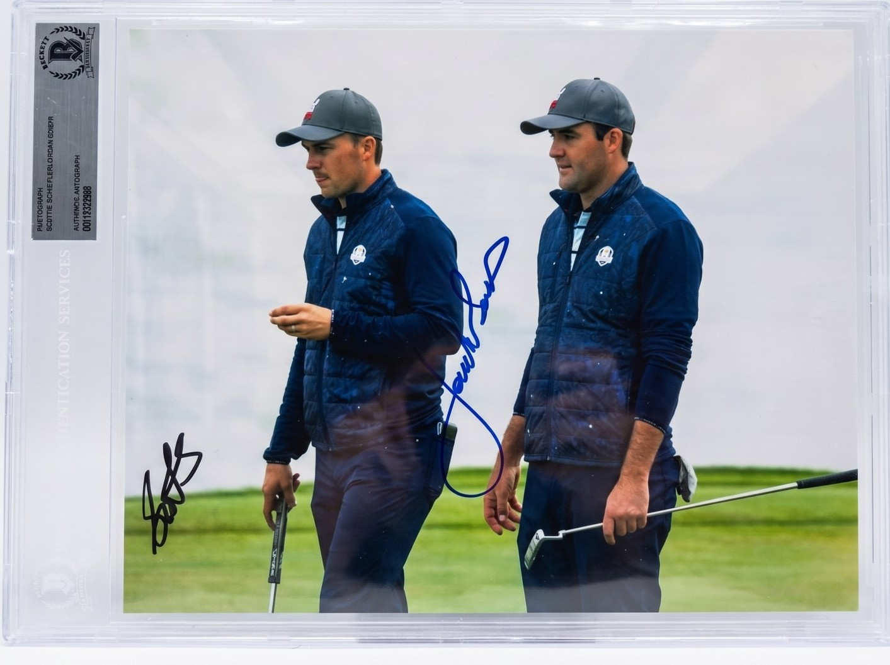
Премиум · витрина
Два предмета высшего уровня: артефакты первой победы на мейджоре и реликвия самого закрытого гольф-клуба мира.
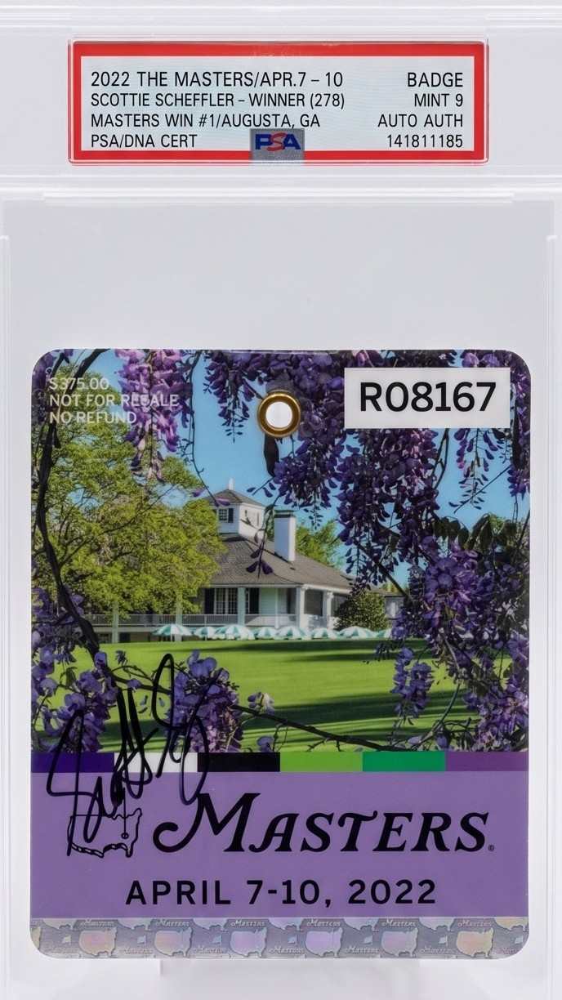
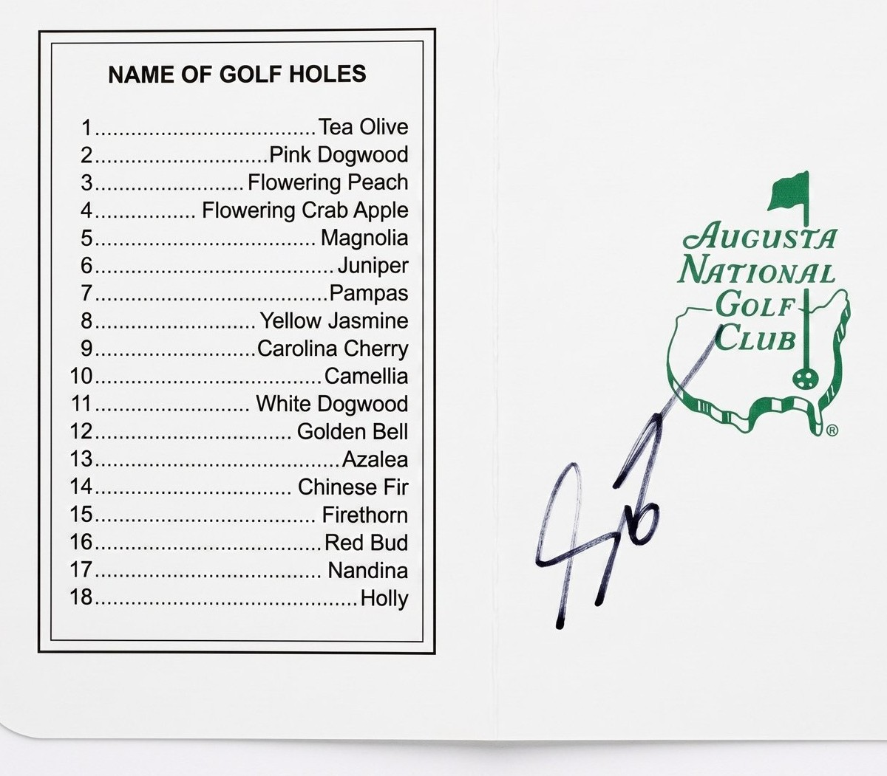